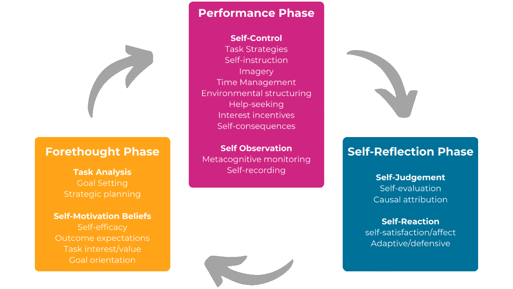
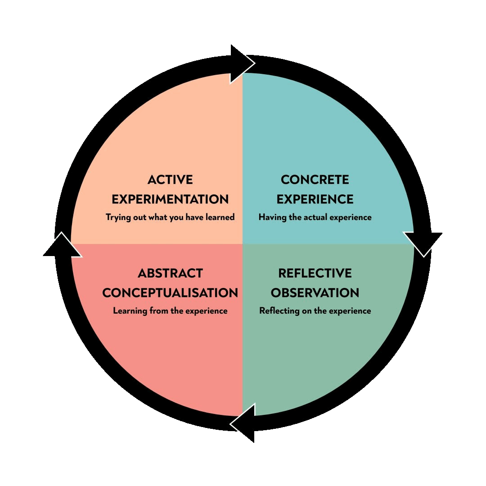

Adaptive Feedback Loops in AI: Transforming Education Through Human-Centered Learning
AI is rewriting the future of education, turning classrooms into dynamic ecosystems where self-regulated learners and adaptive feedback loops co-create knowledge through iterative cycles of experience, reflection, and innovation.

Introduction
The rise of artificial intelligence (AI) is reshaping how we interact with knowledge, compelling educational systems to evolve beyond outdated models. As the OECD warns in Elliott et al., 2024, AI’s ability to outperform humans in reasoning and problem-solving means schools must prioritize intellectual growth, creativity, and civic engagement over mere skill acquisition.
Central to this transition are adaptive feedback loops (AFLs) – dynamic systems where learners, educators, and AI collaborate to build responsive, ever-improving learning environments.
This article explores how AFLs, powered by tools like generative assessments and adversarial networks, redefine education through three powerful lenses: for learning (guiding growth), of learning (measuring progress), and as learning (refining learning itself).
Zimmerman’s Cyclical Phases Model
Like the for, of, and as learning triad (for/of/as), the Zimmerman model is a useful tool for conceptualizing adaptive feedback loops. It proposes a three-stage recursive structure for analyzing AFLs:
- Forethought (goal-setting),
- Performance (strategy implementation),
- And self-reflection (outcome evaluation).
The paradigm is constructive because it positions feedback loops as catalysts for self-regulated learning, where iterative reflection informs subsequent cycles (Zimmerman, 2002).
Kolb’s Experiential Learning Cycle
The Kolb’s model is also a useful conceptual framework. It advances a four-stage process:
- Concrete experience,
- Reflective observation,
- Abstract conceptualization,
- And active experimentation.
Like the Zimmerman model, the Kolb’s model emphasizes learning as inherently adaptive – constrained not by linear progression but by the cyclical refinement of knowledge through environmental interaction.
Both models re-enforce the concept of iterative, adaptive, AI driven feedback loops in the context of the for/of/as learning triad.
The Learning Triad: Three Pathways to Human-AI Collaboration
For Learning: AI as a Personalized Learning Partner
Traditional feedback often feels one-sided, like a top-down directive from machine to learner. AFLs flip this by making AI an active collaborator. For example, generative assessments use large language models (LLMs) to deliver real-time, individualized feedback – adjusting not just what learners study, but also how they approach challenges.
Research by Kinder et al. (2024) reveals that AI tutors outperform static feedback in boosting engagement and helping learners articulate their reasoning. By eliminating the need to “compare their work against an expert solution” (Sailer et al., 2023), these systems act as responsive scaffolds, aligning with Zimmerman’s Cyclical Phases Model. Here, generative assessments excel during the performance stage, refining strategies mid-activity, while mirroring Kolb’s active experimentation by testing learner hypotheses.
Of Learning: Illuminating Patterns to Improve Systems
AFLs turn raw data into actionable insights. Generative adversarial networks (GANs), for instance, synthesize educational datasets that simulate real-world scenarios – like student-teacher interactions – without exposing actual user data. Bethencourt-Aguilar’s CopulaGAN-WAN model achieved a 0.89 fidelity score, enabling educators to spot systemic issues such as hidden biases in assessments (Bethencourt-Aguilar et al., 2023).
This analytical approach reflects the of learning dimension: AI’s ability to identify trends (e.g., recurring errors) informs curriculum redesign, embedding feedback directly into evaluative systems. In Kinder et al.’s 2025 study, educators using this data improved the quality of their justifications, the conceptual frameworks they use to justify their evaluative decisions. This is a step toward the OECD’s vision of education focused on adaptability over rote skills.
As Learning Teaching Through Co-Creation
The most transformative dimension positions AFLs as learning activities themselves. When students critique AI-generated simulations – such as medics evaluating GAN-produced patient cases – they engage in metacognitive practice, questioning how knowledge is constructed.
This aligns with Kolb’s reflective observation and shifts education toward the OECD’s call for democratic citizenship: learning becomes a collective journey, not an isolated task.
Similarly, Zimmerman’s self-reflection phase gains new depth, as learners and educators evolve tools like AFLs by interrogating their limitations. Kinder et al. (2024) found static feedback matches AI in decision accuracy, but falls short in fostering this higher-order collaboration – proving that human-AI reciprocity, not AI supremacy, drives future-ready learning.
Bridging Theory and Practice: How AFLs Work
To operationalize AFLs, we must reconcile individual growth (Zimmerman, 2002) with experiential cycles (McLeod, 2025). Consider a pre-service teacher using an LLM tutor ☕
- For Learning: The AI offers real-time prompts to refine lesson planning, reducing cognitive load.
- Of Learning: The system flags common gaps in student understanding, shaping professional development.
- As Learning: The teacher redesigns the AFL itself, using error patterns to build smarter feedback loops.
This triad transforms AFLs from transactional tools into adaptive ecosystems. Metrics like text length and justification quality (Kinder et al., 2024) highlight that engagement and depth – not just accuracy – define effective learning.
Crucially, AFLs prioritize self-regulated growth, mirroring Zimmerman’s emphasis on iterative reflection while embodying Kolb’s belief in learning as experimentation and refinement.
The following table provides actionable insights into the intersections of for, of, and as learning with AI driven adaptive feedback loops.
Implications for the Future of Education
-
Beyond Automation: The value of education lies not in racing AI but in nurturing metacognitive skills. As the OECD notes, “automation of many jobs will still not be possible and a fully employed labour force will still be economically viable” (Elliott et al., 2024).
-
Scalable Equity: Generative assessments (e.g., ChatGPT) democratize personalized learning, “creating outputs that are attuned to the needs of educators and systems leaders […] informed by the specific contexts of practitioners, and that involve partners directly in the creation of outputs” (Baker et al., 2022).
-
Curriculum as Collaborative Design: By inviting learners to co-create AFLs, schools cultivate an adaptive expertise that is “dynamically reshaped during deliberation” and required to navigate AI-driven societies (Elliott et al., 2024).
Challenges and Next Steps
LLMs, while potent, struggle with domain-specific accuracy. Hallucinations in feedback are a risk, especially in fields like law or medicine. Integrating GANs’ adversarial validation – where networks stress-test generated responses – could bolster reliability. Imagine an AI tutor that critiques its own feedback, ensuring medical students train with realistic simulations.
Conclusion
AFLs redefine the role of educators in the AI era: not as gatekeepers of facts, but as facilitators of curiosity, reflection, and ethical collaboration. By merging generative AI with human agency through the ‘for/of/as’ framework, we move from static pipelines to fluid learning ecologies – ensuring education remains relevant when machines enhance our uniquely human potential.
References
Baker, A., Weisgrau, J., & Bristal Philyaw K. (2022, May).Feedback loops: Mapping transformative interactions in education innovation. Digital Promise.https://doi.org/10.51388/20.500.12265/155 Retrieved from: https://files.eric.ed.gov/fulltext/ED622549.pdf
Bethencourt-Aguilar, A., Castellanos-Nieves, D., Sosa-Alonso, J., & Area-Moreira, M. (2023). Use of Generative Adversarial Networks (GANs) in Educational Technology Research. Journal of New Approaches in Educational Research, 12(1), 153-170. doi: https://doi.org/10.7821/naer.2023.1.1231
Elliott, S., et al. (2024). /What should teachers teach and students learn in a future of powerful AI?* OECD Education Spotlights: The AI and Future of Skills (AIFS) project. https://www.oecd.org/content/dam/oecd/en/publications/reports/2025/05/what-should-teachers-teach-and-students-learn-in-a-future-of-powerful-ai_4578ec74/ca56c7d6-en.pdf
Gardiner, L. (2023, December 19). Self-regulated learning and the meta-learner. Thinking Matters. https://www.thinkingmatters.com/self-regulated-learning-and-the-meta-learner/
Kinder, A., Briese, F. J., Jacobs, M., Dern, N., Glodny, N., Jacobs, S., & Leßmann, S. (2025). Effects of adaptive feedback generated by a large language model: A case study in teacher education. Computers and Education: Artificial Intelligence, 8, 100349. https://doi.org/10.1016/j.caeai.2024.100349
Liu, D., Tang, X., & Wang, X. (2025). Examining the effect of artificial intelligence in relation to students’ academic achievement: A meta-analysis. Computers and Education: Artificial Intelligence, 8, 100400. https://doi.org/10.1016/j.caeai.2025.100400 Retrieved from: https://www.sciencedirect.com/science/article/pii/S2666920X25000402
M. Sailer, E. Bauer, R. Hofmann, J. Kiesewetter, J. Glas, I. Gurevych, F. Fischer (2023). Adaptive feedback from artificial neural networks facilitates pre-service teachers’ diagnostic reasoning in simulation-based learning. Learning and Instruction, 83 (2023), 10.1016/j.learninstruc.2022.101620 Article 101620 Retrieved from: https://www.sciencedirect.com/science/article/pii/S095947522200041X
McLeod, S. (2025, March 19). Kolb’s learning styles and experiential learning cycle. Simply Psychology. https://www.simplypsychology.org/learning-kolb.html
Song, D. (2025). Construction and effect evaluation of virtual simulation education scenarios for the five-education development driven by generative adversarial network (GAN). In Proceedings of the 2025 International Conference on Education Reform, Ideology and Politics (ERIP 2025) (pp. 386–395). Atlantis Press. https://doi.org/10.2991/978-94-6463-776-2_50 Retrieved from: https://www.atlantis-press.com/proceedings/erip-25/126013398
Zimmerman, B. J. (2002). Becoming a self-regulated learner: An overview. Theory Into Practice, 41(2). https://doi.org/10.1207/s15430421tip4102_2
AI Models Used In This Report: The ideas, structure, writing, and editing in this paper were performed by the author. Various AI models were used to research, collect, and verify data, format arguments, and grammatically structure content. Models used include: Qwen 2.5 235b a22b, Meta Llama 3.1 405b Instruct, Sonar Large, GPT-5, GPT-4.1 2025-04-14, Claude 3 haiku 2024-03-07, Llama 4 Maverick, Gemma 3 27b IT, Devstral Small 2505, Llama 3.3 70b Instruct, Llama 4 Scout, Qwen Qwq 32b